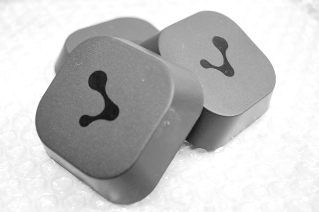

Eddystone™ Starter Guide - Getting Started with Mobile Apps for Eddystone Beacons and the Physical Web
This Starter Guide gets you up and running with creating mobile applications for the Physical Web using the Evothings JavaScript Eddystone API. When you attach a beacon to an object, it becomes part of the Physical Web, and object that a mobile app can monitor and track. It is easy to write Eddystone apps using the fast workflow of Evothings Studio. Read on to learn more!
Eddystone at a glance
Eddystone beacons are based on a new type of beacon technology. At the of this article you will find links to introductory articles that explain what Eddystone is. The Eddystone protocol was developed by Google, and is an open and extensible standard for beacons. Beacon vendors have embraced the standard and offer Eddystone compatible beacons.
In comparison with iBeacon technology, Eddystone gives you more information, such as the URL of the beacon (hence the concept of the "Physical Web"), signal strength, temperature and battery level. The standard also has room for extensions such as data from embedded sensors, for example motion, orientation, temperature, humidity, light and sound.
With the Evothings JavaScript API for Eddystone, it is very easy for web developers to develop beacon applications.
With the Evothings Viewer app and Evothings Workbench, you can develop Eddystone apps directly on mobile phones and tablets. When you connect multiple phones to the Workbench, all of them will run the app and reload updates as you edit the code. Any changes you make to the code will instantly be sent to all devices each time you save any of the files in the app. It is easy to develop mobile applications in JavaScript for Eddystone beacons with this fast workflow.
The Eddystone functionality is implemented as a Cordova/PhoneGap plugin. This is an open-source plugin you can use to build a native app for publication on the Google Play Store and the Apple App Store. This plugin is included with the Evothings Viewer app, so you don't need to do anything special to run an Eddystone app when using Evothings Viewer. When your app is ready to be published, build it using Cordova. More on this below.
What you need to get started
Here is what you need to get up and running:
- Get your hands on Eddystone compatible beacons. See list of beacon manufacturers on the Google Beacon site. You can also use an Eddystone emulator if you don’t have any beacons, for example: github.com/don/node-eddystone-beacon.
- Download Evothings Workbench and install on your computer
- Install Evothings Viewer from Apple App Store or Google Play)
- An Internet connection
- If you are new to Evothings Studio, it is helpful to consult the Evothings Studio Starter Guide. You can also learn as you go through this guide.
Run the Eddystone Scan example app

The easiest way to get started is to explore the Eddystone Scan example app that comes with the Evothings Studio download:
- Launch Evothings Workbench on your computer and get a connect key under the "Connect" tab.
- Launch Evothings Viewer on your mobile phone, enter the connect code and tap the CONNECT button.
- Locate the example app Eddystone Scan in the Workbench example app list.
- Click RUN.
- The app will start scanning for beacons automatically and display the beacon data received.
How to create your own Eddystone app
A quick way to create your own app is to copy the example app:
- Click COPY on the Eddystone Scan app.
- Fill in the name of the app folder and the parent folder where you want the app folder to be created.
- Click CREATE and the new app appears under "My Apps".
- Click RUN to launch the app. This will it the currently active app and it is now watched for live reload on file save.
Now experiment by making some changes to the code:
- Click CODE - this opens a file browser with the source code of the app
- Open a code file in a text editor and make some changes, for example, open index.html and change the h1 header tag text.
- Save the file.
- The app now reloads on the connected device(s) and displays your updates.
- If the app does not reload, click RUN to make sure it is the active app.
To change the label that appears in the "My Apps" listing, alter the title tag.
Explore the Eddystone JavaScript library
The Eddystone JavaScript library is packaged as a Cordova plugin. Cordova is a build tool that enables creating native apps you can publish on Apple App Store and Google Play.
If you visit the GitHub repository for the Eddystone Cordova/PhoneGap plugin you will find helpful documentation about the Eddystone JavaScript API.
In addition, the tutorial Detecting Eddystone beacons in JavaScript made easy introduces the library and provides background information about Eddystone.
Technical details about JavaScript source files
The Eddystone library is implemented in a JavaScript source file called eddystone.js. This file is included with the Cordova plugin.
JavaScript files for the Cordova plugins are bundled with the Evothings Viewer app, and these are not visible in the Evothings app folder. Including the link to cordova.js will in turn include eddystone.js and the JavaScript files for all installed plugins.
Useful links
- Eddystone Cordova plugin and JavaScript API documentation
- Detecting Eddystone beacons in JavaScript made easy - Evothings presents the Cordova Eddystone plugin
- 5 reasons to keep your eyes open for Eddystone beacons
- Eddystone - Bluetooth Beacons are getting smarter
- IoT business opportunities using Eddystone - cost effective sensor technology and fast development of mobile applications with Evothings Studio
- Eddystone protocol specification and resources
- Google Developers page for beacons
- Evothings Starter Guide - Getting started with Evothings Studio
- Cordova Starter Guide - Guide to building native apps
- Evothings download page